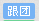

"庐山全景双卧4日游" 含门票景交赠1早3正，宿山上三星设施酒店
 上海出发 深入游庐山 最动人春季去处之一 风景绝美动人 卧铺往返旅行劳累 无购物
住 宿： 三星 行程天数：4天
团期： 端午节, 06/07, 06/08, 06/09, 06/10, 06/11, 06/12, 06/13
行程概览：上海南站 > 南昌 > 庐山 > 南昌 > 上海南
[端午] "庐山全景-三叠泉-南昌高铁三日游 " 宿挂三酒店，含车载wifi
上海出发 车载WIFI、三叠泉瀑布 含1早3正 无购物
交 通： 火车往返 行程天数：3天
团期： 06/10, 06/12, 06/17, 06/19, 06/24, 06/26, 06/28, 06/29
行程概览：上海 > 南昌 > 庐山 > 南昌 > 上海
[端午] "婺源-三清山-景德镇-九江3日" 游宿挂四，无购物
多城市出发 高品质纯玩 无购物
住 宿： 四星 行程天数：3天
团期： 端午节 , 06/08, 06/10, 06/11, 06/13, 06/15, 06/17, 06/18
行程概览：九江 > 婺源 > 三清山山下 > 三清山 > 三清山山下 > 景德镇 > 九江
"龙湾水上乐园-东林大佛-海韵沙滩二日游" 九江参团（当地游）
所有城市出发 九江参团 提供接送
行程天数：2天
团期： 05/25, 05/26, 05/27, 05/28, 05/29, 05/30, 05/31, 06/01
行程概览：各城市自行出发抵达九江 > 游览中华贤母园，结束愉快旅程
"庐山-含鄱口-仙人洞-石门涧-东林寺2日游" 九江参团，天天发
所有城市出发 精心设计线路，游庐山山顶和西麓最具代表精华景点，城区包接送
行程天数：2天
团期： 端午节, 06/07, 06/08, 06/09, 06/10, 06/11, 06/12, 06/13
> 全国各大城市自行抵达江西魅力旅游城市-九江，若提前一天抵达，旅行社可代订不同
星级住宿，
请在预定时备注，届时旅行社工作人员将根据您的需求合理安排！
>黄龙寺 > 石门涧